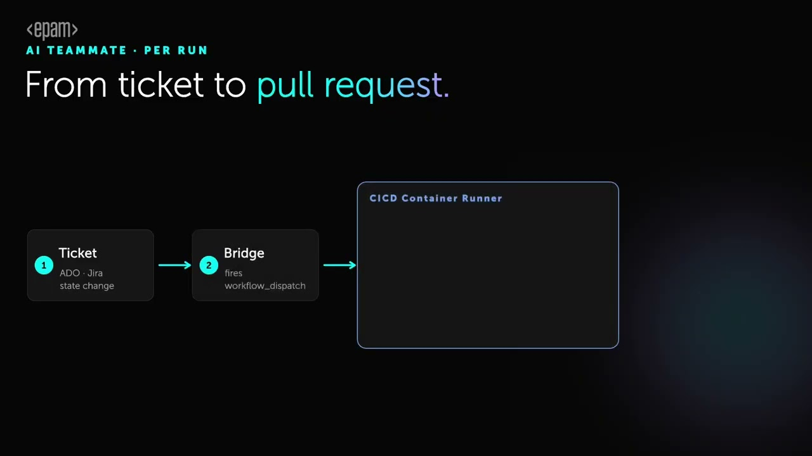

CLI and MCP tools
Run direct tool calls against every connected system from your terminal. 320+ tools, available the moment you install.
MCP tools reference →Few know where to start. DMTools is the orchestration layer between the systems you already run and the agents your teams already use — one CLI, every integration, nothing to deploy.
CLI tools, callable as plain JavaScript functions
Production-ready system integrations
Adoption paths, each valuable on its own
Servers to run or agents to babysit
See it in motion

Scene source and brief live in yoclip-examples — EPAM 2023 brand system, nine scenes, dual Night and Snow variants.
The problem
Copilots sit in every team and a model sits in every IDE. But the work between them still moves by hand: someone copies a ticket into a prompt, someone pastes the answer into a branch, and the glue is a folder of scripts nobody owns. The tools never learned to talk to each other.
Disconnected tools. Broken handoffs.
One-off scripts don't scale. What scales is an orchestration layer that speaks every system's language.
The answer
Between your AI agents and your enterprise systems — one CLI, every integration they need.
One CLI for the whole toolchain.
AI providers
Anthropic Claude · OpenAI · Google Gemini · AWS Bedrock · GitHub Copilot · Ollama · Vertex AI · DIAL
Delivery and collaboration
Jira · Azure DevOps · GitHub · GitLab · Confluence · Figma · Microsoft Teams · TestRail · Bitrise · Jenkins · SharePoint · Bitbucket
Plus Vertex AI, DIAL, Bitrise, Jenkins, SharePoint and Bitbucket — 20+ integrations in all.
By the numbers
Not a roadmap — what ships today. Every tool is generated from annotated Java at compile time, documented in the repository, and callable the moment you install.
0+
CLI tools spanning trackers, repositories, wikis, design systems and AI providers
0+
System integrations, each with setup guides and a tool reference
17+
Java baseline — runs anywhere your CI already runs
Architecture
Clean runner. Fresh tools. Full context. The model reasons, and a pull request waits for a human. Nothing to deploy, nothing to babysit.
Ticket state change
Jira or Azure DevOps fires a service hook on update.
Bridge function
A small function triggers workflow_dispatch.
Clean runner
CI installs the DMTools CLI fresh for this run.
Build context
A pre-action pulls the ticket, wiki, repository and knowledge base.
Model reasons
Your chosen provider works with the full picture, not a snippet.
Publish results
A post-action opens a branch and a pull request.
Human in the loop
An engineer reviews and approves. Always.
Zero persistent infrastructure. DMTools installs fresh on every run. There is no server to maintain and no agent process to keep alive — just repeatable, auditable automation that leaves a trail your auditors can read.
Developer experience
Read the ticket. Pull the page. Ask the model. Ship the result. Every one of the 320+ tools is a function your engineers can already call — no SDK to learn, no schema to hand-write.
// 1 — read context from every connected system const ticket = await jira_get_ticket('PROJ-123'); const guidelines = await confluence_content_by_title('API Design Guidelines'); const openPRs = await github_list_prs({ state: 'open' }); // 2 — build the context and ask the model await file_write('context.md', buildContext(ticket, guidelines, openPRs)); const result = await gemini_ai_chat({ prompt: `Implement the story: ${ticket.summary}`, context: file_read('context.md') }); // 3 — ship it: branch and pull request, waiting for review await github_create_branch('feature/PROJ-123'); await github_create_pull_request({ title: ticket.summary, body: result.explanation, branch: 'feature/PROJ-123' });
Adoption
Start from the terminal today and stop there if that's enough. Each path stands on its own, and each one is a step you can take without a platform migration.
Run direct tool calls against every connected system from your terminal. 320+ tools, available the moment you install.
MCP tools reference →Orchestrate real workflows — AI teammate, reporting, test generation, story development — in plain JavaScript.
Jobs reference →Run DMTools in GitHub Actions, GitLab CI, Jenkins or Bitrise for ticket processing and teammate flows at scale.
GitHub Actions guide →Install project-level DMTools skills for Cursor, Claude, Codex and Copilot. The agents your teams already use gain full delivery reach.
Skill guide →Install
No account, no licence key, no server. Pick your platform and paste.
curl -fsSL https://github.com/epam/dm.ai/releases/latest/download/install.sh | bash
Installs the CLI to ~/.dmtools. Requires Java 17 or newer.
irm https://github.com/epam/dm.ai/releases/latest/download/install.ps1 | iex
Run in PowerShell 5.1 or newer. Requires Java 17 or newer.
curl -fsSL https://github.com/epam/dm.ai/releases/latest/download/skill-install.sh | bash
Adds the DMTools skill to your project for Cursor, Claude Code and Codex.
Then check it landed
dmtools list
Prints every tool the CLI can reach. Nothing listed means the integrations still need credentials — configuration guide →
Common questions
What teams ask on the first call — where the data goes, who has to run it, and what happens when the model gets something wrong.
DMTools is an open-source command-line orchestrator that connects AI agents to enterprise delivery systems. It exposes 320+ tools across 20+ integrations — Jira, Azure DevOps, GitHub, GitLab, Confluence, Figma, Microsoft Teams and every major AI provider — behind a single CLI. DMTools is built and maintained by EPAM Systems and released under the Apache 2.0 licence.
No. DMTools is a CLI you run inside your own CI pipeline or on your own machine, with your own credentials and your own choice of AI provider. There is no DMTools-operated backend in between, and no telemetry path back to EPAM.
No. One technical teammate installs and configures DMTools once per project — Java 17 or newer plus a set of environment variables. After that the output reaches delivery managers, QA and platform teams as processed tickets, drafted pull requests and generated reports, not as a tool anyone has to operate.
Nothing merges on its own. Every branch and pull request DMTools produces stops for human review before it ships — the model drafts the work, your engineers approve and merge it. Because each run installs fresh and leaves its trail in CI, a wrong answer is auditable rather than mysterious.
No. DMTools integrates with Jira, Azure DevOps, GitHub, GitLab, Bitbucket, Confluence, SharePoint, Figma, Microsoft Teams, TestRail, Jenkins and Bitrise — more than twenty systems in total. GitHub is one of them, not a requirement.
DMTools supports Anthropic Claude, OpenAI, Google Gemini, Google Vertex AI, AWS Bedrock, the EPAM DIAL enterprise gateway, and fully local models through Ollama when code and tickets must never leave your network. The provider is chosen at runtime through environment variables, so switching takes no code change.
DMTools itself is free and open source under Apache 2.0 — no account, no licence key, no paid tier. You pay only the AI provider and the delivery tools your organisation already uses.
A typical MCP server wraps one system; DMTools covers more than twenty behind one install, and exposes them four ways — direct CLI calls, MCP for assistants such as Claude and Cursor, plain JavaScript functions inside jobs, and CI pipelines. Every tool is generated from annotated Java at compile time, so the CLI surface, the MCP schema and the JavaScript functions cannot drift apart.
Get started
Open source under Apache 2.0, built and maintained by EPAM engineers who run it on their own delivery.